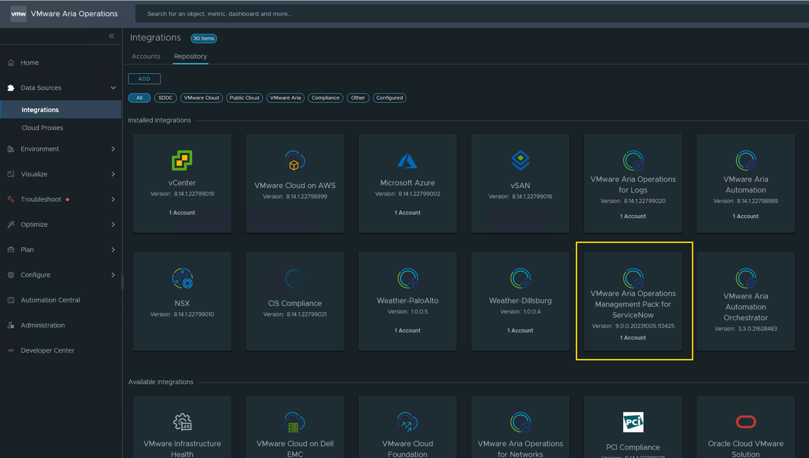
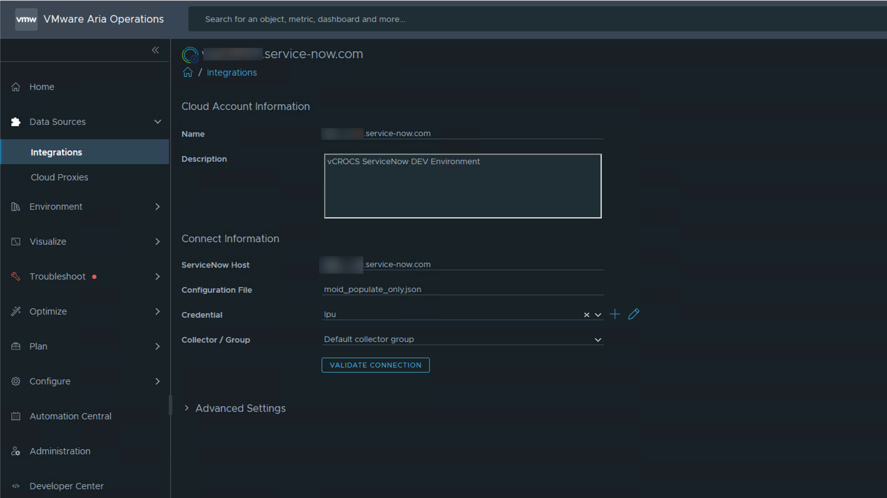
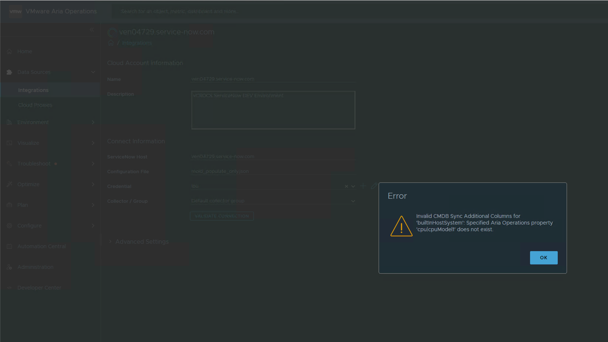
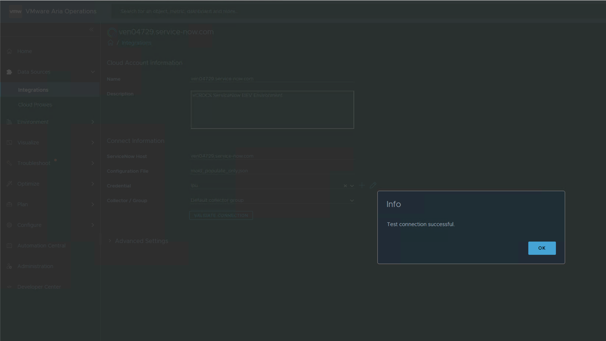
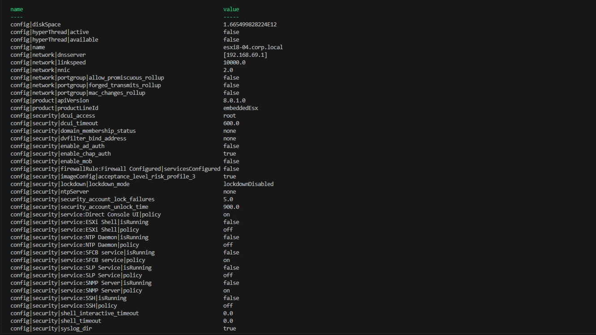
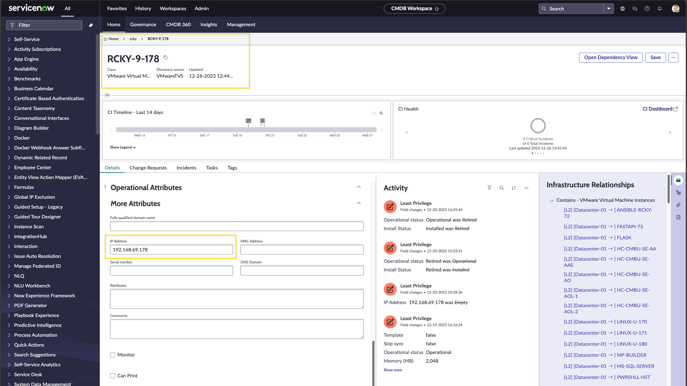
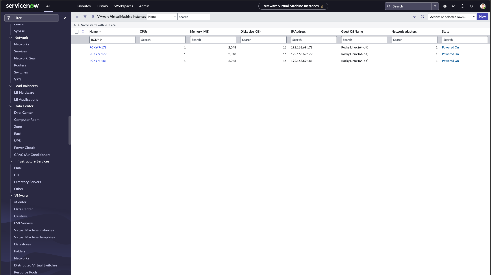

VMware Aria Operations | Servicenow | Management Pack

How to use the VMware Aria Operations | Servicenow | Management Pack to add information to the Servicenow CMDB
Blog Update:
I presented the content from this Blog at a TECH BYTES session on February 9th, 2024. 150 people registered for the webinar and there was a lot of interest with the ServiceNow Management Pack (MP). We received good feedback from the attendees on the capabilities of the MP.
VMware Aria Operations
VMware Aria Operations 8.14.1 and Servicenow MP (Management Pack) 9.0 was used for this Blog Post. When new versions of VMware Aria Operations or the MP are released, the code or process may need to be changed.
All the source code for this Blog is saved in my GitHub Repository. Click on the links within the blog to access the code.

I wanted to share how I setup the Servicenow Management Pack in my lab to update a Servicenow CMDB (Configuration Management DataBase). The VMware Documentation covers the process well. I wanted to cover a couple of steps to help make the process easier.
I followed the instructions exactly as listed in the PDF link below.
Instructions to setup Servicenow to allow the MP to send data to CMDB | Click Here to View PDF
For the Servicenow user permissions I did the following:
- Created a Servicenow user named LPU (Least Privilege User)
- Created a Servicenow Role and named it vROPS_MP
- Added the user to the role.
- Added the role to all the Servicenow ACLs listed in the document. If there were more than one ACL with the same name with read permissions, I used the newest ACL. I did not add to all ACLs with the same name.
- I gave the role “read” and “edit_ci_relations” to the tables listed in the document.
- I used the moid_populate_only.json config that is OOTB (Out of the Box) with no changes to start to make sure everything was working correct.
When I added the account to the management pack in Aria Operations, it did a good job to let me know if everything was set up correctly in Servicenow and if the json config file was setup correct. I had a permission wrong and it showed me what was wrong when I did a Validate Connection. I fixed the permission like it showed me and then everything worked. My lab data is now showing up in Servicenow CMDB.
Management Pack Config screen:

Management Pack Config screen (Validate Connection | Failed). Shows the field name is incorrect:

Management Pack Config screen (Validate Connection | Success):

OOTB, the config files can be found here on the VMware Aria Operations Appliance:
The config file will go here: /usr/lib/vmware-vcops/user/plugins/inbound/servicenow_adapter3/work
The templates are located at: /usr/lib/vmware-vcops/user/plugins/inbound/servicenow_adapter3/conf/config_samples
Here is the moid_populate_only.json with no changes.
Code:
{{< highlight json >}}
{
"cmdbSync": {
"syncMode": "POPULATE_ONLY",
"objectIdentifierSource": "MOID"
}
}
{{< /highlight >}}
After I verified everything was working with OOTB settings, I wanted to add some additional data to the Servicenow CMDB. The VM (virtual machine) IP address is not sent to Servicenow CMDB with default settings. Here is the json file I have in my lab to send VM IP and Host CPU info.
Code:
{{< highlight json >}}
{
"cmdbSync": {
"syncMode": "POPULATE_ONLY",
"objectIdentifierSource": "MOID",
"additionalColumns": {
"builtInHostSystem": [
{
"cmdbColumn": "cpu_name",
"vropsType": "PROPERTY",
"vropsField": "cpu|cpuModel"
}
]
,
"builtInVirtualMachine": [
{
"cmdbColumn": "guest_os_fullname",
"vropsType": "PROPERTY",
"vropsField": "summary|guest|fullName"
},
{
"cmdbColumn": "ip_address",
"vropsType": "PROPERTY",
"vropsField": "summary|guest|ipAddress"
}
]
}
}
}
{{< /highlight >}}
In the VMware documentation it says to use the vropsField name in the json config file but I did not see where it told you how to get the vropsField name. Here are some examples on how to get the vROPS field names.
vROPS VM Field Names available (PowerShell Script):
Code:
{{< highlight PowerShell >}}
$opsURL = "https://vao-ent.corp.local"
$opsUsername = "admin"
$opsPassword = "VMware1!"
$vmName = "LINUX-U-170"
$authSource = "local"
----- Get Aria Operations token
$uri = "$opsURL/suite-api/api/auth/token/acquire?_no_links=true"
#$uri
--- Create body
$bodyHashtable = @{
username = $opsUsername
authSource = $authSource
password = $opsPassword
}
--- Convert the hashtable to a JSON string
$body = $bodyHashtable | ConvertTo-Json
$token = Invoke-RestMethod -Uri $uri -Method Post -Headers @{
"accept" = "application/json"
"Content-Type" = "application/json"
} -Body $body -SkipCertificateCheck
#$token.token
$authorization = "OpsToken " + $token.token
#$authorization
----- Get the VM Operations identifier
#$uri = "$opsURL/suite-api/api/resources?maintenanceScheduleId=&name=$vmName&page=0&pageSize=1000&_no_links=true"
$uri = "$opsURL/suite-api/api/resources?name=$vmName&page=0&pageSize=1000&_no_links=true"
#$uri
$identifier = Invoke-RestMethod -Uri $uri -Method Get -Headers @{
"accept" = "application/json"
"Authorization" = $authorization
} -SkipCertificateCheck
#$identifier
$identifier = $identifier.resourceList
$json = $identifier | ConvertTo-Json -Depth 10
#$json
Convert the JSON string to a PowerShell object
$data = $json | ConvertFrom-Json
Search for the object where resourceKindKey is "VirtualMachine"
$targetResourceKindKey = "VirtualMachine"
$matchedObject = $data | Where-Object { $_.resourceKey.resourceKindKey -eq $targetResourceKindKey }
If a matching object is found, output the identifier
if ($matchedObject) {
$vmIdentifier = $($matchedObject.identifier)
#Write-Output $($matchedObject.identifier)
} # End If
else {
Write-Output "No VirtualMachine resourceKindKey found"
} # End Else
----- Get Field Names and Values
$uri = "$opsURL/suite-api/api/resources/properties?resourceId=$vmidentifier&_no_links=true"
#$uri
$resourcePropertiesList = Invoke-RestMethod -Uri $uri -Method Get -Headers @{
"accept" = "application/json"
"Authorization" = $authorization
} -SkipCertificateCheck
$outPut = $resourcePropertiesList.resourcePropertiesList.property
Write-Output $outPut
{{< /highlight >}}
vROPS Host Field Names available (PowerShell Script):
Code:
{{< highlight PowerShell >}}
$opsURL = "https://vao-ent.corp.local"
$opsUsername = "admin"
$opsPassword = "VMware1!"
$hostName = "esxi8-04.corp.local"
$authSource = "local"
----- Get Aria Operations token
$uri = "$opsURL/suite-api/api/auth/token/acquire?_no_links=true"
#$uri
--- Create body
$bodyHashtable = @{
username = $opsUsername
authSource = $authSource
password = $opsPassword
}
--- Convert the hashtable to a JSON string
$body = $bodyHashtable | ConvertTo-Json
$token = Invoke-RestMethod -Uri $uri -Method Post -Headers @{
"accept" = "application/json"
"Content-Type" = "application/json"
} -Body $body -SkipCertificateCheck
#$token.token
$authorization = "OpsToken " + $token.token
#$authorization
----- Get the VM Operations identifier
$uri = "$opsURL/suite-api/api/resources?name=$hostName&page=0&pageSize=1000&_no_links=true"
#$uri
$identifier = Invoke-RestMethod -Uri $uri -Method Get -Headers @{
"accept" = "application/json"
"Authorization" = $authorization
} -SkipCertificateCheck
#$identifier
$identifier = $identifier.resourceList
$json = $identifier | ConvertTo-Json -Depth 10
#$json
Convert the JSON string to a PowerShell object
$data = $json | ConvertFrom-Json
#$data
Search for the object where resourceKindKey is "VirtualMachine"
$targetResourceKindKey = "Hostsystem"
$matchedObject = $data | Where-Object { $_.resourceKey.resourceKindKey -eq $targetResourceKindKey }
If a matching object is found, output the identifier
if ($matchedObject) {
$vmIdentifier = $($matchedObject.identifier)
#Write-Output $($matchedObject.identifier)
} # End If
else {
Write-Output "No VirtualMachine resourceKindKey found"
} # End Else
----- Get Field Names and Values
$uri = "$opsURL/suite-api/api/resources/properties?resourceId=$vmidentifier&_no_links=true"
#$uri
$resourcePropertiesList = Invoke-RestMethod -Uri $uri -Method Get -Headers @{
"accept" = "application/json"
"Authorization" = $authorization
} -SkipCertificateCheck
$outPut = $resourcePropertiesList.resourcePropertiesList.property
Write-Output $outPut
{{< /highlight >}}
Here is the results of running the PowerShell scripts to get the vropsField names. The column "name" is what you need to use in the json config file.

If you don't want to use the PowerSHell Scripts to get the VMware Aria Operations field names, watch this YouTube video to see the steps I used to get the field names using the VMware Aria Operations APIs.

The cmdbColumn name info that needs included in the json config file is in Servicenow. Watch this YouTube video to see the steps I used to get the Servicenow column names to use with the json config file.

Example of how Servicenow CMDB will look with IP Address sent from VMware Aria Operation Management Pack.

Another Example of how Servicenow CMDB will look with IP Address sent from VMware Aria Operation Management Pack.

Links to resources about VMware Aria Operations | Servicenow | Management Pack:
- Source code used in this Blog Post.
- Brock Peterson Blog Post | Updated vRTVS Management Pack for ServiceNow. This Blog Post does a great job discussing how to send VMware Aria Operations Alerts to Servicenow.
- VMware Aria Operations Servicenow Management Pack documentation.
When I write my blogs, I always say there are many ways to accomplish the same task. This article is just one way that you could accomplish this task. I am showing what I felt was a good way to complete the use case but every organization/environment will be different. There is no right or wrong way to complete the tasks in this article.
- If you found this Blog article useful and it helped you, Buy me a coffee to start my day.